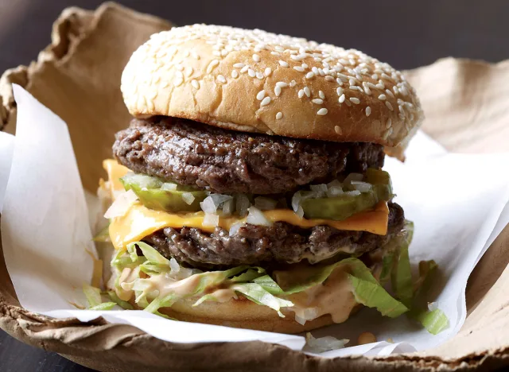

The Best Copycat Big Mac Recipe

We're big fans of the Big Mac (after all, it was on the cover of the first Eat This, Not That! book)—or at least the general principle behind it. The thin patties, the layer of American cheese, the special sauce—all of it comes together in a way that makes this burger a convincing icon of the American fast-food establishment. But no one can say the Big Mac is exactly a healthy meal. That's where we come in! There are two main issues with the Big Mac recipe as it stands: The quality of the ingredients is subpar, and the middle bun is absolutely superfluous. We replace the mystery meat with lean ground sirloin, sear it in a cast-iron skillet until beautifully browned, then bring the classic ingredients together inside a single, squishy sesame seed bun.
YOU'LL NEED
- 2 Tbsp olive-oil mayonnaise
- 1 Tbsp mustard
- 1 Tbsp ketchup
- 1 Tbsp grated onion
- 1 Tbsp sweet pickle relish
- 1 tsp Worcestershire sauce
- 1 lb ground sirloin
- Salt and black pepper to taste
- 4 slices American cheese
- 8 dill pickle slices
- 1/2 cup minced yellow onion
- 4 sesame seed buns, lightly toasted
- 1 cup shredded iceberg lettuce
HOW TO MAKE IT
To make the special sauce, in a mixing bowl, combine the mayonnaise, mustard, ketchup, grated onion, relish, and Worcestershire.
- Form the beef into 8 even balls.
- Use your hands or a spatula to flatten the balls into thin patties on a cutting board.
- Preheat a large cast-iron skillet over medium-high heat.
- Season the patties on both sides with salt and black pepper.
- When very hot, add 4 of the patties to the skillet.
- Cook for about 1 minute, until a brown crust develops.
- Flip, cover 2 of the patties with a slice of cheese and continue cooking for 60 to 90 seconds longer, until the bottoms also have a crust.
- Top each cheeseburger with 2 pickles and a handful of minced onion.
- Stack the naked burgers on top of the cheeseburgers and remove to a cutting board.
- Repeat with the remaining 4 patties.
- Spread the bun bottoms with a generous amount of special sauce and top with shredded lettuce.
- Place the burgers on the buns, top with the bun tops, and serve.
HOME | Get our recipe for The Best Copycat Pizza Recipe. | The Best Copycat Fried Chicken Recipe.